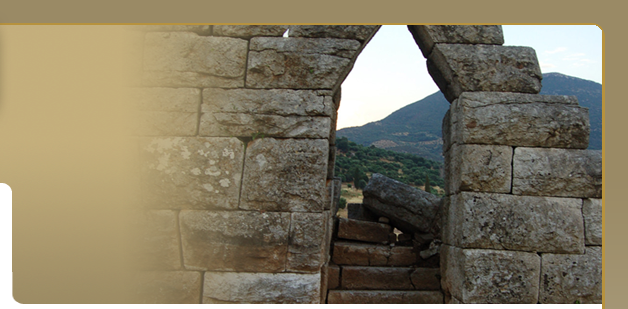
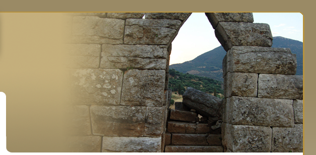
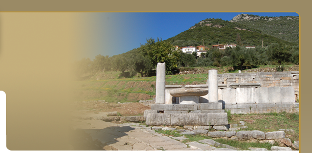
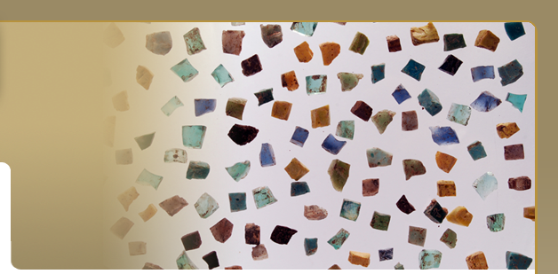
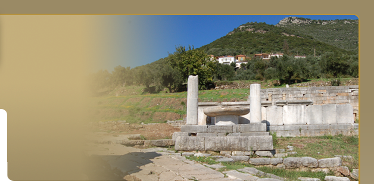
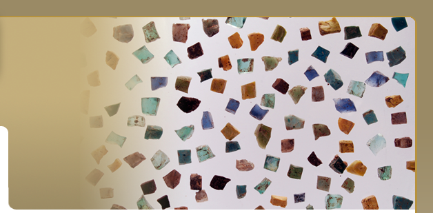
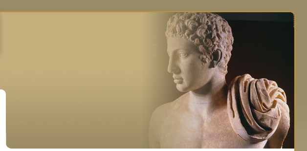
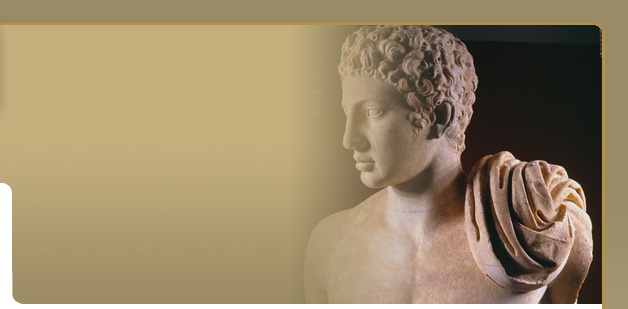

THE CROSS ROAD
The excavation on the east side of the Asklepieion revealed a wide street oriented north-south, which was uncovered for a length of about 80 m.The street, which is 12 m. wide and has a built drain covered by large limestone slabs, is bounded on the east side by the Asklepieion and on the west by another building block that has not yet been excavated. At its intersection with the east-west street running between the north side of the Asklepieion and the south side of the Agora, a rectangular limestone base was discovered in situ, about 6.50 m. from the northeast corner of the Ekklesiasterion. It has a notch in the top surface to receive a column, which was found next to it and reerected on the base. The column is 1.358 m. high, has a diameter at the bottom of 0.48 m., and has the following four-line inscription carved towards the top:
A stone Hekataion, 0.73 m. high, depicting Artemis in three different types set around a colonnette, was discovered near the inscribed column, on which it presumably stood, on top of an impost block.

CHRISTIAN SETTLEMENT
At the intersection of the roads NE and east of the Asklepieion a densely inhabited quarter was revealed constituting part of a 5th-7th c. A.D settlement extending into the interior of the Arcive room. The settlement stretches southwards over the entire length of the eastern road and northwards up to the area of the agora. Many scattered architectural members suggest that at least two early Christian Basilicas existed in the agora. To this settlement belong more than 40 Christian tombs which have been revealed at times to the NW and to the north of the Asklepieion including pottery and bronze fibulae as burial gifts characteristic of the time. Various marble funerary inscriptions have also been found. The walls of the houses are constructed carelessly with all kinds of reused material such as broken architectural members, inscriptions and sculpture. Among these, two torso of female poros statues of the mid 2nd c. B.C. stand out.
 THE BURIAL ENCLOSURE THE BURIAL ENCLOSURE
A Hellenistic funerary monument came to light at the east edge of the street discussed above. It takes the form of a rectangular enclosure wall consisting of a stepped crepis, or-thostats and a crowning, with a number of cist graves inside it. According to an inscription on its crowning member, it belonged to six men and four women, who were probably killed during the capture of Messene by Nabis of Sparta in 201 BC. Messenian women took part in the battle against Demetrios of Pharos, Philip V's general, who made an unsuccessful attempt to take the city in 214 BC. Other people were later buried in the same enclosure down to the Roman imperial period, as is clear from the series of names inscribed there. The graves contained the skeletons of inhumated men and women, accompanied by some interesting, rich grave offerings: terracotta and glass vases, metal objects, gold jewellery, and bone pins, the heads of which include ones in the form of masks, a lyre and a pinecone. Three lead urns dating from the 1st century BC contained cremated remains.
THE HIEROTHYSION
The first structure mentioned by Pausanias, as he proceeded southwards from the Asklepieion in the direction of the Gymnasium, is the Hierothysion, a building that housed statues of the twelve Olympian gods, a bronze statue of Epaminondas and 'ancient tripods', which Homer refers to as apyroi ('without fire') (Pausanias 4.32.1). As its name indicates, the Hierothysion was probably directly associated with the hierothytai; these were annually elected city officials responsible for the celebration of the Ithomaia and other religious festivals, who are mentioned in many Messenian inscriptions in connection with the agonothetai (i.e. president of the games) and the chalidophoroi (cup-bearers). On the coins of Messene the tripod is usually accompanied by a depiction of Zeus Ithomatas, the most important deity of Messene. The erecting of a statue of Epaminondas amongst the statues of the twelve gods is an indication of the importance attributed to him by the Messenians as a hero and founder of their city, of equal status with the gods. A large building complex about 50 m. wide and with a preserved length of about 70 m. has begun to be revealed just to the south of the Asklepieion
Its north wall is in contact with the Bathhouse to the south of the Asklepieion, and it i s enclosed by streets to the east and west. It consists of several (more than four) autonomous architectural units. The north-west unit is characterised by the existence of an open peristyle area, which is surrounded by spacious rooms taking the form of banquet rooms, the floors of which are covered with a reddish lime-mortar. The probable function of these rooms, as rooms for ritual banquets does not conflict with the character of the Hierothysion as a dining room used by the hierothytai and agonothetai during religious festivals, and as a place in which statues were erected to the twelve Olympian gods and the hero and founder of Messene, Epaminondas. The location of this building complex coincides with that of the Hierothysion seen by Pausanias on his tour. s enclosed by streets to the east and west. It consists of several (more than four) autonomous architectural units. The north-west unit is characterised by the existence of an open peristyle area, which is surrounded by spacious rooms taking the form of banquet rooms, the floors of which are covered with a reddish lime-mortar. The probable function of these rooms, as rooms for ritual banquets does not conflict with the character of the Hierothysion as a dining room used by the hierothytai and agonothetai during religious festivals, and as a place in which statues were erected to the twelve Olympian gods and the hero and founder of Messene, Epaminondas. The location of this building complex coincides with that of the Hierothysion seen by Pausanias on his tour.
|


 


 





 
